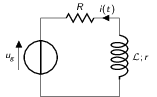
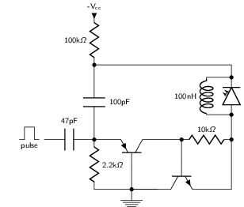

TD1 : Équations de Maxwell dans le vide et champ électromagnétique
1 Équations de Maxwell dans le vide DM
On considère une onde plane scalaire en notation complexe :
\begin{align*} A(\vv{r},t)=A_0\exp\left(i\left(\vv{k}.\vv{r}-\omega t\right)\right) \end{align*}Exprimer son gradient et son laplacien en fonction du vecteur d'onde \(\vv{k}\) et de \(A(\vv{r},t)\).
où \(A_0\) est l'amplitude de l'onde, \(\vv{k}\) est le vecteur d'onde et \(\omega\) est la pulsation de l'onde.
- Gradient
- \begin{align*} \vv{\nabla}A&=\left| \begin{array}{l} \frac{\partial A}{\partial x}\\ \frac{\partial A}{\partial y}\\ \frac{\partial A}{\partial z} \end{array} \right.=\left| \begin{array}{l} ik_xA\\ik_yA\\ik_zA \end{array} \right.\\ &=i\vv{k}A(\vv{r},t) \end{align*}
- Laplacien
- \begin{align*} \Delta A&=\frac{\partial^2A}{\partial x^2}+\frac{\partial^2A}{\partial y^2}+\frac{\partial^2A}{\partial z^2}\\ &=-k_x^2A-k_y^2A-k_z^2A\\ &=-k^2A(\vv{r},t) \end{align*}
On considère maintenant une onde plane vectorielle en notation complexe :
\begin{align*} \vv{E}(\vv{r},t)=\vv{E}_0\exp\left(i\left(\vv{k}.\vv{r}-\omega t\right)\right) \end{align*}Donner les expressions de sa divergence et de son rotationnel en fonction du vecteur d'onde \(\vv{k}\) et de \(\vv{E}(\vv{r},t)\).
- Divergence
- \begin{align*} \vv{\nabla}.\vv{E}&=\frac{\partial E_x}{\partial x}+\frac{\partial E_y}{\partial y}+\frac{\partial E_z}{\partial z}\\ &=\left| \begin{array}{l} ik_x\\ik_y\\ik_z \end{array} \right.\cdot\left| \begin{array}{l} E_{0x}\\E_{0y}\\E_{0z} \end{array} \right.\,e^{i\left(\vv{k}.\vv{r}-\omega t\right)}\\ &=i\vv{k}.\vv{E} \end{align*}
- Rotationnel
- \begin{align*} \vv{\nabla}\times\vv{E}&=\left| \begin{array}{l} \frac{\partial}{\partial x}\\\frac{\partial}{\partial y}\\\frac{\partial}{\partial z} \end{array} \right.\times\left| \begin{array}{l} E_{0x}\\E_{0y}\\E_{0z} \end{array} \right.\,e^{i\left(\vv{k}.\vv{r}-\omega t\right)}\\ &=\left| \begin{array}{l} ik_yE_{0z}-ik_zE_{0y}\\ ik_zE_{0x}-ik_xE_{0z}\\ ik_xE_{0y}-ik_yE_{0x} \end{array} \right.\,e^{i\left(\vv{k}.\vv{r}-\omega t\right)}\\ &=i\vv{k}\times\vv{E} \end{align*}
- Écrire les équations de Maxwell en présence d'une densité volumique de charge \(\rho(\vv{r},t)\) et d'une densité volumique de courant \(\vv{J}(\vv{r},t)\).
Équations de Maxwell :
| Maxwell-Gauss | \(\div\vv{E}=\vv{\nabla}.\vv{E}=\tfrac{\rho}{\epsilon_0}\) |
| Conservation du flux magnétique | \(\div\vv{B}=\vv{\nabla}.\vv{B}=0\) |
| Maxwell-Faraday | \(\rot\vv{E}=\vv{\nabla}\times\vv{E}=-\tfrac{\partial\vv{B}}{\partial t}\) |
| Maxwell-Ampère | \(\rot\vv{B}=\vv{\nabla}\times\vv{B}=\mu_0\vv{J}+\mu_0\epsilon_0\tfrac{\partial\vv{E}}{\partial t}\) |
- Trouver les solutions en ondes planes des équations de Maxwell dans le vide (avec \(\rho=0\) et \(\vv{J}=\vv{0}\)). Montrer que ces solutions n'existent que si \(k=|\vv{k}|\) est relié à ω par une relation que l'on précisera. Rappeler l'expression de la vitesse de phase et de la vitesse de groupe.
On cherche des solutions en ondes planes, homogènes, monochromatiques i.e.
\begin{align*} \vv{E}&=\vv{E}_0\,e^{i\left(\vv{k}.\vv{r}-\omega t\right)}\\ \vv{B}&=\vv{B}_0\,e^{i\left(\vv{k}'.\vv{r}-\omega' t\right)} \end{align*}avec, a priori, \(\vv{k}\neq\vv{k}'\) et \(\omega\neq\omega'\).
Les équations de Maxwell deviennent
\begin{align} \vv{\nabla}.\vv{E}&=i\vv{k}.\vv{E}=0\\ \vv{\nabla}\times\vv{E}&=i\vv{k}\times\vv{E}=-\frac{\partial\vv{B}}{\partial t}=+i\omega'\vv{B}\\ \vv{\nabla}.\vv{B}&=i\vv{k}'.\vv{B}=0\\ \vv{\nabla}\times\vv{B}&=i\vv{k}'\times\vv{B}=\epsilon_0\mu_0\frac{\partial\vv{E}}{\partial t}=-\epsilon_0\mu_0i\omega\vv{E} \end{align}En considérant les expressions (1) et (3),
\begin{align*} \vv{k}.\vv{E}&=\vv{k}'.\vv{B}=0 \end{align*}on déduit que, dans le vide, les champs électrique \(\vv{E}\) et magnétique \(\vv{B}\) forment des ondes planes transverses i.e. que les directions de ces champs sont orthogonales à la direction de propagation \(\vv{k}\) ou \(\vv{k}'\).
En développant la relation (2), on obtient
\begin{align*} i\vv{k}\times\vv{E}&=i\omega'\vv{B}\\ i\vv{k}\times\vv{E}_0\,e^{i\left(\vv{k}.\vv{r}-\omega t\right)}&=i\omega'\vv{B}_0\,e^{i\left(\vv{k}'.\vv{r}-\omega' t\right)}\\ \vv{B}_0&=\frac{\vv{k}\times\vv{E}_0}{\omega'}\,e^{i\left((\vv{k}-\vv{k}').\vv{r}-(\omega-\omega')t\right)} \end{align*}Comme \(\vv{B}_0\) est une constante et que la relation ci-dessus demeure valable pour tout \(r\) et tout temps \(t\), on déduit donc que \(\omega=\omega'\) et \(\vv{k}=\vv{k}'\). Dans le vide, les vecteurs \(\vv{B},\vv{k}\) et \(\vv{E}\) forment donc un trièdre direct et sont liés par la relation
\begin{align*} \vv{B}=\frac{\vv{k}\times\vv{E}}{\omega} \end{align*}Finalement, en remplaçant l'expression du champ magnétique dans la relation (4)
\begin{align*} i\vv{k}\times\vv{B}&=-\epsilon_0\mu_0i\omega\vv{E}\\ \vv{k}\times\left(\vv{k}\times\vv{E}\right)&=-\epsilon_0\mu_0\omega^2\vv{E} \end{align*}et en appliquant la relation \(\vv{a}\times(\vv{b}\times\vv{c})=(\vv{a}.\vv{c}).\vv{b}-(\vv{a}.\vv{b}).\vv{c}\), on déduit
\begin{align*} \underbrace{\left(\vv{k}.\vv{E}\right)}_{\substack{=0\\\text{car transverse}}}.\vv{k} -\left(\vv{k}.\vv{k}\right).\vv{E}&=-\epsilon_0\mu_0\omega^2\vv{E} \end{align*}soit la relation de dispersion \((\epsilon_0\mu_0c^2=1)\)
\begin{align*} k^2&=\epsilon_0\mu_0\omega^2\\ k&=\frac{\omega}{c} \end{align*}La vitesse de phase \(v_\phi\) qui correspond à la vitesse de déplacement des plans d'onde s'écrit
\begin{align*} v_\phi=\frac{\omega}{k}=c \end{align*}La vitesse de groupe \(v_g\) qui correspond à la vitesse de l'onde enveloppe est égale à
\begin{align*} v_g=\frac{d\omega}{dk}=c \end{align*}Pour un milieu non-dispersif tel que le vide, la vitesse de phase est donc égale à la vitesse de groupe toutes les deux égales à la vitesse de la lumière dans le vide \(c\).
- Donner l'expression du champ magnétique correspondant à \(\vv{E}\). Représenter sur un schéma \(\vv{E},\vv{B}\) et \(\vv{k}\) dans le cas où \(\vv{E}\) est polarisé rectilignement selon une direction \(\vv{u}_x\). Que se passe-t-il dans le cas d'une onde polarisée circulairement ?
La question précédente a permis de montrer que les vecteurs \((\vv{k},\vv{E},\vv{B})\) formaient un trièdre direct, \(\vv{E}\) et \(\vv{B}\) étant donc transverses à la direction de propagation \(\vv{k}\) de l'onde. Dans le cas d'une onde polarisée rectilignement selon \(\vv{u}_x\) i.e. pour laquelle le champ électrique \(\vv{E}\) est colinéaire à \(\vv{u}_x\) on obtient ainsi
Dans le cas d'une polarisation circulaire, le champ électrique \(\vv{E}\) décrit, au cours du temps, un cercle autour du vecteur d'onde \(\vv{k}\)
- Calculer le vecteur de Poynting \(\vv{R}\) et l'intensité \(I\).
Le vecteur de Poynting se calcule à partir des champs réels soit, dans le cas d'une onde polarisée rectilignement (\(\vv{E}_0\parallel\vv{u}_x\), cf. Figure 1),
\begin{align*} \vv{R}&=\frac{\text{Re}(\vv{E})\times\text{Re}(\vv{B})}{\mu_0}\\ &=\frac{1}{\mu_0}\vv{E}_0\cos\left(\vv{k}.\vv{r}-\omega t\right)\times\vv{B}_0\cos\left(\vv{k}.\vv{r}-\omega t\right)\\ &=\frac{1}{\mu_0}\cos^2\left(\vv{k}.\vv{r}-\omega t\right)\,\vv{E}_0\times\left(\frac{\vv{k}\times\vv{E}_0}{\omega}\right)\\ &=\frac{1}{\mu_0\omega}\cos^2\left(\vv{k}.\vv{r}-\omega t\right)\bigg[\left(\vv{E}_0.\vv{E}_0\right).\vv{k}-\underbrace{\left(\vv{E}_0.\vv{k}\right)}_{=0}.\vv{E}_0\bigg]\\ &=\frac{E_0^2}{\mu_0\omega}\cos^2\left(\vv{k}.\vv{r}-\omega t\right)\,\vv{k} \end{align*}En utilisant la relation de dispersion \(k=\frac{\omega}{c}\), le fait que \(\mu_0\epsilon_0c^2=1\) et en posant \(\vv{k}=k\vv{u}\) où \(\vv{u}\) correspond à la direction de propagation de l'onde, on obtient finalement pour le vecteur de Poynting
\begin{align*} \vv{R}&=\epsilon_0cE_0^2\cos^2\left(\vv{k}.\vv{r}-\omega t\right)\,\vv{u} \end{align*}L'intensité \(I\) correspond à la variation de la puissance électromagnétique traversant un élément de surface \(d\vv{S}\). C'est donc la moyenne temporelle du vecteur de Poynting
\begin{align*} I&=\left\|\left\langle\vv{R}\right\rangle_T\right\|\\ &=\frac{1}{2}\epsilon_0cE_0^2 \end{align*}Les détecteurs ne peuvent en général pas suivre les signaux électromagnétiques dont la fréquence est trop grande : l'intensité est par conséquent la quantité pertinente à estimer car mesurable expérimentalement.
2 Énergie magnétique stockée dans une bobine
Une bobine de longueur ℓ, de rayon \(a\) et d'axe \((Oz)\) est constituée par un enroulement de \(n\) spires circulaires jointives par unité de longueur.
- Quelle est, dans l'approximation du solénoïde infini, le champ magnétique engendré par la bobine lorsqu'elle est parcourue par un courant \(I\) ?
Dans le référentiel cartésien \((O,x,y,z)\), le plan \((xOy)\) est un plan de symétrie de la distribution de courant. Le champ magnétique étant un pseudo-vecteur, sa direction est donc orthogonale à ce plan de symétrie i.e. \(\vv{B}\perp(xOy)\to\vv{B}\parallel\vv{u}_z\). Par ailleurs, les invariances par rotation d'angle θ et par translation le long de l'axe \((Oz)\) font que le champ magnétique ne dépend que de la distance \(r\) à l'axe de la bobine
\begin{align*} \vv{B} = B(r)\,\vv{u}_z \end{align*}En appliquant le théorème d'Ampère à savoir
\begin{align*} \oint_\mathcal{C}\vv{B}.\vv{d\ell} &= \mu_0\iint_{\mathcal{S/C}}\vv{j}.\vv{dS}=\mu_0I_\mathcal{C} \end{align*}sur un contour \(\mathcal{C}\) rectangulaire tel que \(r\leq a\), on déduit que le champ magnétique en tout point \(r\leq a\) est égal au champ magnétique sur l'axe de la bobine i.e.
\begin{align*} B(r)=B(r=0)=\mu_0nI \end{align*}Pour \(r>a\), en considérant une spire rectangulaire par laquelle traverse un courant \(I'=n\ell'I\), le théorème d'Ampère implique
\begin{align*} \left(\mu_0nI-B(r>a)\right)\times\ell'&=\mu_0I'=\mu_0n\ell'I\\ B(r>a)&=0 \end{align*}- Quelle est l'énergie magnétique \(\mathcal{E}_m\) associée à la bobine ? Quelle valeur du coefficient d'auto-inductance \(\mathcal{L}\) de la bobine peut-on déduire ?
L'énergie stockée dans la bobine correspond au produit de la densité volumique d'énergie électromagnétique \(u=\frac{\epsilon_0E^2}{2}+\frac{B^2}{2\mu_0}\) par le volume de la bobine \(\ell\times\pi a^2\) soit
\begin{align*} \mathcal{E}_m&=\frac{B^2}{2\mu_0}\times\ell\times\pi a^2\\ &=\frac{\mu_0^{\cancel{2}}n^2I^2}{2\cancel{\mu_0}}\times\ell\times\pi a^2\\ &=\frac{1}{2}\mu_0n^2\ell\pi a^2\,I^2=\frac{1}{2}\mathcal{L}I^2 \end{align*}Le coefficient d'auto-inductance s'écrit donc
\begin{align*} \mathcal{L}&=\mu_0n^2\pi a^2\times\ell \end{align*}- La bobine est mise en charge par un générateur de f.e.m \(u_g\), de résistance \(R\) grande par rapport à celle de l'enroulement. Quelle est la loi d'évolution du courant dans le circuit, fermé à l'instant \(t=0\) ?

La loi d'évolution du courant est décrite par la formule
\begin{align*} u_g-Ri(t)&=ri(t)+\mathcal{L}\frac{di(t)}{dt} \end{align*}Étant donné que \(R\gg r\), le courant \(i(t)\) est régi par l'équation différentielle du premier ordre
\begin{align*} \frac{di(t)}{dt}+\frac{R}{\mathcal{L}}\cdot i(t)-\frac{u_g}{\mathcal{L}}&=0 \end{align*}soit un courant \(i(t)=Ae^{-\frac{R}{\mathcal{L}}t} + B\). À \(t=0\), le courant est nul d'où \(A=-B\) et \(i(t)=K\left(1-e^{-\frac{t}{\tau}}\right)\) avec \(\tau=\frac{\mathcal{L}}{R}\). La détermination de la constante \(K\) se fait via l'équation d'évolution du courant i.e.
\begin{align*} K\cancel{\frac{1}{\tau}e^{-\frac{t}{\tau}}}+\frac{K}{\tau}\left(1-\cancel{\frac{1}{\tau}e^{-\frac{t}{\tau}}}\right)-\frac{u_g}{\mathcal{L}}&=0\\ \frac{K}{\tau}&=\frac{u_g}{\mathcal{L}}\\ K&=\frac{u_g}{R} \end{align*}soit
\begin{align*} i(t)=\frac{u_g}{R}\left(1-e^{-\frac{t}{\tau}}\right) \end{align*}- Calculer les champs magnétique et électrique engendrés par la bobine à l'instant \(t\) en tout point.
Le champ magnétique \(\vv{B}(t)\) s'écrit
\begin{align*} \vv{B}(t)&=\mu_0ni(t)\vv{u}_z=\frac{\mu_0u_gn}{R}\left(1-e^{-\frac{t}{\tau}}\right)\,\vv{u}_z \end{align*}Le champ électrique se déduit de l'équation de Maxwell-Faraday sachant qu'en raison des invariances, le champ \(\vv{E}=\vv{E}(r,t)\) est une fonction de la distance \(r\) à l'axe de la bobine et du temps. De plus, le champ électrique est un vecteur appartenant aux plans de symétrie et orthogonal aux plans d'antisymétrie. Dans cet exercice, le champ électrique résulte de la variation temporelle du champ magnétique i.e. de l'évolution du courant au cours du temps. Le vecteur \(\vv{E}\) est donc normal aux plans d'antisymétrie de la distribution de courant : le plan \((\vv{u}_r,\vv{u}_z)\) est ainsi un plan d'antisymétrie de la distribution de courant impliquant que \(\vv{E}=E(r,t)\vv{u}_\theta\). L'équation de Maxwell-Faraday dans sa version intégrale s'écrit alors
\begin{align*} \rot\vv{E}&=-\tfrac{\partial\vv{B}}{\partial t}\\ \iint_\mathcal{S}\rot\vv{E}.\vv{dS}&=-\iint_\mathcal{S}\frac{\partial\vv{B}}{\partial t}.\vv{dS}\\ \oint_{\mathcal{C}/\mathcal{S}}\vv{E}.\vv{d\ell}&=-\iint_\mathcal{S}\frac{\partial\vv{B}}{\partial t}.\vv{dS} \end{align*}où \(\mathcal{C}\) est une boucle autour de l'axe de la bobine et de rayon \(r\). On déduit ainsi que le champ électrique est égal à
\begin{align*} 2\pi rE(r,t)&=-\pi r^2\frac{\partial B_z}{\partial t}\\ \vv{E}(r,t)&=-\frac{r}{2}\mu_0n\frac{di(t)}{dt}\,\vv{u}_\theta\\ \vv{E}(r,t)&=-\frac{r}{2}\times\frac{\mu_0u_gn}{R}\times\frac{1}{\tau}e^{-\frac{t}{\tau}}\,\vv{u}_\theta\\ &=-\frac{r}{2}\times\frac{\mu_0u_gn}{\mathcal{L}}\times e^{-\frac{t}{\tau}}\,\vv{u}_\theta \end{align*}Grâce aux expressions de \(\vv{E}\) et \(\vv{B}\), on peut comparer l'importance relative des densités volumiques d'énergie électrique et magnétique
\begin{align*} \frac{u_e}{u_m}&=\frac{\frac{\epsilon_0\vv{E}^2}{2}}{\frac{\vv{B}^2}{2\mu_0}}=\mu_0\epsilon_0\frac{E^2}{B^2}\\ &\simeq\frac{r^2}{c^2}\times\left(\frac{\frac{di}{dt}}{i}\right)^2 \end{align*}À défaut de calculer exactement ce rapport, on peut en faire une estimation dimensionnelle en introduisant la durée typique \(\tau=\frac{\mathcal{L}}{R}\) sur laquelle ont lieu les variations de \(i(t)\). Ainsi, \(\frac{di}{dt}\sim\frac{i}{\tau}\) et le rapport \(\frac{u_e}{u_m}\) devient (en se plaçant en \(r=a\) où le rapport est maximum)
\begin{align*} \frac{u_e}{u_m}\ll1&\to\frac{a^2}{c^2}\left(\frac{\frac{i}{\tau}}{i}\right)^2\ll1\\ &\to a^2\ll c^2\tau^2 \end{align*}Cette condition équivalente à écrire \(a\ll c\tau\), correspond à l'approximation des régimes quasi-stationnaires (ARQS) : \(c\tau\) représente la distance parcourue par une onde électromagnétique dans le vide pendant la durée τ tandis que \(a\) est la dimension caractéristique du solénoïde. Elle signifie qu'à l'échelle \(a\) du solénoïde, les phénomènes propagatifs peuvent être négligés. En particulier, le champ magnétique s'adapte instantanément aux variations du courant comme si le régime était stationnaire d'où la validité de l'expression \(\vv{B}=\mu_0ni(t)\vv{u}_z\) tant que \(a\ll c\tau\).
- Quelle est l'expression du flux du vecteur de Poynting à travers la surface délimitant le volume de la bobine ? Interpréter le résultat.
L'expression du vecteur de Poynting \(\vv{\pi}=\frac{\vv{E}\times\vv{B}}{\mu_0}\) devient
\begin{align*} \vv{\pi}(r,t)&=\frac{\vv{E}\times\vv{B}}{\mu_0}\\ &=-\frac{r}{2}\times\frac{\mu_0^{\cancel{2}}n^2}{\cancel{\mu_0}}\,i\frac{di}{dt}\,\vv{u}_r \end{align*}Le flux du vecteur de Poynting correspond à la puissance électromagnétique \(\mathcal{P}_\text{EM}\) sortant à travers la surface entourant le solénoïde \((r=a)\) soit
\begin{align*} \mathcal{P}_\text{EM}&=\int_{\theta=0}^{2\pi}\int_{z=0}^\ell\vv{\pi}(a,t).(ad\theta dz\vv{u}_r)\\ &=-\underbrace{\mu_0n^2\pi a^2\ell}_{\mathcal{L}} i\frac{di}{dt}=-\mathcal{L}i\frac{di}{dt} \end{align*}L'énergie apportée par rayonnement à travers la surface est l'intégrale temporelle de la puissance entrante i.e. \(\mathcal{P}_\text{EM}^\text{sortant}=-\mathcal{P}_\text{EM}^\text{entrant}\)
\begin{align*} \mathcal{E}&=\int\mathcal{P}_\text{EM}^\text{entrant}(t)dt=\int\mathcal{L}i\frac{di}{dt}dt\\ &=\int\mathcal{L}idi=\frac{1}{2}\mathcal{L}i^2(t) \end{align*}ce qui correspond à l'énergie magnétique stockée dans une bobine.
Ainsi, une bobine permet "d'absorber" les variations du courant électrique et est utilisée, par exemple, dans des dispositifs d'émission de lumière ultra-courte comme sur le montage ci-dessous

Figure 2: Dispositif électronique générant des impulsions lumineuses ultra-courte. (J. S. Kapustinsky et al. (NIMA 241, 1985).
3 "Propriétés mécaniques" du champ électromagnétique
Énergie
- Une particule ponctuelle de masse \(m\), de charge \(q\), de vitesse \(\vv{v}\) est située en \(M\) à l’instant \(t\). Rappeler l'expression de la force de Lorentz s'il règne en \(M\) à l'instant \(t\) un champ électromagnétique (EM) (\(\vv{E}(M,t),\vv{B}(M,t)\)). Écrire les équations de Maxwell en présence d'une densité volumique de charge \(\rho\) et d'une densité de courant \(\vv{j}\).
Force de Lorentz : \(\vv{F}=q\vv{E}+q\vv{v}\times\vv{B}\)
Équations de Maxwell :
| Maxwell-Gauss | \(\div\vv{E}=\vv{\nabla}.\vv{E}=\tfrac{\rho}{\epsilon_0}\) |
| Conservation du flux magnétique | \(\div\vv{B}=\vv{\nabla}.\vv{B}=0\) |
| Maxwell-Faraday | \(\rot\vv{E}=-\tfrac{\partial\vv{B}}{\partial t}\) |
| Maxwell-Ampère | \(\rot\vv{B}=\mu_0\vv{j}+\mu_0\epsilon_0\tfrac{\partial\vv{E}}{\partial t}\) |
- À partir des équations de Maxwell, établir l'équation locale de conservation de la charge.
Équation locale de conservation de la charge
\begin{align*} \div\left(\rot\vv{B}\right)=\vv{\nabla}.\left(\vv{\nabla}\times\vv{B}\right)&=0\\ \mu_0\div\vv{j}+\mu_0\epsilon_0\frac{\partial}{\partial t}\div\vv{E}&=0\\ \div\vv{j}+\frac{\partial\rho}{\partial t}=0 \end{align*}Remarques :
- En régime stationnaire, \(\div\vv{j}=0\) i.e. champ à flux conservatif, on retrouve la loi des nœuds de Kirchhoff à savoir que l'intensité du courant \(i_1=i_2+i_3\)
Dans le conducteur, la densité de courant \(\vv{j}\) s'exprime en fonction du champ \(\vv{E}\) et de la conductivité \(\gamma\) (exprimée en Siemens par mètre) : \(\vv{j}=\gamma\vv{E}\) d'où
\begin{align*} \frac{\partial\rho}{\partial t}+\frac{\gamma}{\epsilon_0}\rho=0\text{ et }\rho(t)=\rho_0\,e^{-t/\tau}\text{ où }\tau=\frac{\epsilon_0}{\gamma}\sim\frac{10^{-11}}{10^7}\sim\unit[10^{-18}]{s} \end{align*}Dans un conducteur, il n'y a donc pas de charge en volume : le courant et donc les charges se déplaçent en surface.
- Exprimer la puissance fournie à une particule par le champ EM en fonction de \(q\), \(\vv{E}\) et de \(\vv{v}\). En déduire la puissance par unité de volume fournie à la matière par le champ EM; on écrira que la matière est composée de particules chargées identiques en nombre \(n(M,t)\) par unité de volume.
La puissance \(\mathcal{P}\) s'écrit comme le produit de la force \(\vv{F}\) par la vitesse de la particule \(\vv{v}\) :
\begin{equation*} \mathcal{P}=\vv{F}.\vv{v}=q\vv{E}.\vv{v}+q(\vv{v}\times\vv{B}).\vv{v}=q\vv{E}.\vv{v} \end{equation*}La puissance par unité de volume \(\tfrac{d\mathcal{P}}{d\tau}=nq\vv{E}.\vv{v}\) or \(\vv{j}=nq\vv{v}\) d'où \(\tfrac{d\mathcal{P}}{d\tau}=\vv{j}.\vv{E}\)
- On note \(\vv{R}\) le vecteur de Poynting et \(u\) la densité d'énergie électromagnétique. Calculer \(\div\vv{R}\) et en déduire l'équation locale de conservation de l'énergie.
\(\vv{R}=\tfrac{\vv{E}\times\vv{B}}{\mu_0}\) et \(u=\tfrac{\epsilon_0E^2}{2}+\tfrac{B^2}{2\mu_0}\)
\begin{align*} \div\vv{R}&=\frac{1}{\mu_0}\div\left(\vv{E}\times\vv{B}\right)\text{ avec }\div\left(\vv{a}\times\vv{b}\right)=\vv{b}.\rot\vv{a}-\vv{a}.\rot\vv{b}\\ &=\frac{1}{\mu_0}\left(\vv{B}.\rot\vv{E}-\vv{E}.\rot\vv{B}\right)\\ &=\frac{1}{\mu_0}\left(-\vv{B}.\frac{\partial\vv{B}}{\partial t}-\vv{E}.\left(\mu_0\vv{j}+\mu_0\epsilon_0\frac{\partial\vv{E}}{\partial t}\right)\right)\\ &=\frac{1}{\mu_0}\left(-\frac{1}{2}\frac{\partial B^2}{\partial t}-\frac{\mu_0\epsilon_0}{2}\frac{\partial E^2}{\partial t}-\mu_0\vv{j}.\vv{E}\right)\\ &=-\frac{\partial u}{\partial t}-\vv{j}.\vv{E} \end{align*} \begin{align*} \div\vv{R}+\frac{\partial u}{\partial t}+\vv{j}.\vv{E}=0 \end{align*}- Montrer que dans le cas d'un régime périodique, la puissance moyenne entrant par rayonnement à travers une surface fermée est intégralement cédée à la matière contenue dans le volume intérieur à cette surface.
\(\vv{E}=\vv{E}_0\cos\omega t\), \(\vv{B}=\vv{B_0}\sin\omega t\)
\begin{align*} \iiint_V\div\vv{R}d\tau+\iiint_V\frac{\partial u}{\partial t}d\tau+\iiint_V\vv{j}.\vv{E}d\tau=0\\ \iiint_V\div\vv{R}d\tau+\iiint_V\frac{\partial u}{\partial t}d\tau+\underbrace{\iiint_V\frac{d\mathcal{P}}{d\tau}d\tau}_{\mathcal{P}_{\text{EM}\rightarrow\,q}}=0\\ \end{align*}En appliquant le théorème d'Ostrogradsky \(\varoiint_S\vv{a}.d\vv{S}=\iiint_V\div\vv{a}d\tau\), on obtient
\begin{align*} \varoiint_S\vv{R}.d\vv{S}+\iiint_V\frac{\partial u}{\partial t}d\tau+\mathcal{P}_{\text{EM}\rightarrow\,q}=0 \end{align*}La puissance moyenne sortant de la surface fermée1 devient
il s'agit de la puissance sortant d'une surface fermée qui correspond au différentiel entre la puissance ayant pénétrée dans le volume et la puissance sortant de ce volume.
Or
\begin{align*} \frac{\partial u}{\partial t}&=\frac{\epsilon_0E_0^2}{2}\times2\cos\omega t\sin\omega t+\frac{B_0^2}{2\mu_0}\times2\cos\omega t\sin\omega t\\ \left\langle\frac{\partial u}{\partial t}\right\rangle_T&=\epsilon_0E_0^2\left\langle\sin2\omega t\right\rangle_T+\frac{1}{\mu_0}B_0^2\left\langle\sin2\omega t\right\rangle_T\\ \left\langle\frac{\partial u}{\partial t}\right\rangle_T&=0 \end{align*}soit
\begin{align*} \left\langle\mathcal{P}_\text{sortant}\right\rangle_T+\left\langle\mathcal{P}_{\text{EM}\rightarrow\,q}\right\rangle_T=0\\ \left\langle\mathcal{P}_\text{entrant}\right\rangle_T=\left\langle\mathcal{P}_{\text{EM}\rightarrow\,q}\right\rangle_T \end{align*}Impulsion
On considère l'interaction entre une onde EM plane, homogène, harmonique de période \(T=2\pi/\omega\), progressive dans la direction et le sens \(Oz\) et une particule \(M\) (masse \(m\), charge \(q\)) animée sous l'action de la force de Lorentz et d'autres forces, d'un mouvement harmonique forcé, de période \(T\), dans le plan \(z=0\), au voisinage du point \(O\). La polarisation de l'onde et le mouvement forcé ne sont pas forcément rectilignes.

- Exprimer sous la forme d'une intégrale l'énergie \(W\) fournie par le champ EM à la particule en une période.
Onde plane progressive \(\vv{B}=\tfrac{\vv{u}_z\times\vv{E}}{c}\)
Calcul de la puissance \(\mathcal{P}\)
\begin{align*} \mathcal{P}&=\frac{dW}{dt}\text{ avec }\mathcal{P}=q\vv{E}.\vv{v}\\ W&=\int_0^Tq\vv{E}.\vv{v}dt \end{align*}- Déterminer l'impulsion \(\vv{p}\) cédée en une période par le champ à la particule en fonction de \(W\), \(c\) et de \(\vv{u}_z\).
La variation d'impulsion \(\vv{p}\) par unité de temps induite par le passage de l'onde EM est égale à la force de Lorentz \(\vv{F}\)
\begin{align*} \frac{d\vv{p}}{dt}=\vv{F} \end{align*}d'où
\begin{align*} \vv{p}&=\int_0^T\vv{F}dt=\int_0^Tq\left(\vv{E}+\vv{v}\times\vv{B}\right)dt\\ &=\int_0^Tq\vv{E}dt+\int_0^Tq\vv{v}\times\left(\frac{\vv{u}_z\times\vv{E}}{c}\right)dt \end{align*}La première intégrale est nulle car \(\vv{E}=\vv{E}_0\cos\omega t\). Pour déterminer l'expression de la seconde intégrale, on utilise la formule ci-dessous
\begin{align*} \vv{a}\times\left(\vv{b}\times\vv{c}\right)=\left(\vv{a}.\vv{c}\right)\vv{b}-\left(\vv{a}.\vv{b}\right)\vv{c} \end{align*}L'impulsion \(\vv{p}\) devient
\begin{align*} \vv{p}&=\int_0^T\frac{q}{c}\left(\vv{v}.\vv{E}\right)\vv{u}_z\,dt-\int_0^T\frac{q}{c}\left(\vv{v}.\vv{u}_z\right)\vv{E}dt \end{align*}or \(\vv{v}.\vv{u}_z=0\) car la particule est maintenue dans le plan \(z=0\). L'expression de l'impulsion se réduit donc
\begin{align*} \vv{p}=\int_0^T\frac{q}{c}\left(\vv{v}.\vv{E}\right)\vv{u}_z\,dt=\frac{W}{c}\vv{u}_z \end{align*}- Rappeler le lien entre l'impulsion et l'énergie du photon. Vérifier la cohérence avec la question précédente.
L'énergie d'un photon \(E=h\nu=\tfrac{hc}{\lambda}\) est égale à \(pc\) via la relation de de Broglie reliant onde et matière \(\lambda=\tfrac{h}{p}\)
Moment cinétique
La situation est la même qu'à la question 2. On note \(\sigma_z\) la composante sur \(Oz\) du moment cinétique en \(O\) cédé par le champ à la particule en une période.
- Comparer les dimensions de \(W\) et \(\sigma_z\). Proposer une relation à une constante multiplicative près entre \(W\), \(\sigma_z\) et \(T\).
\(\vv{\sigma}_O=\vv{r}\times\vv{p}=\vv{OM}\times\vv{p}\) et \(\sigma_z=\vv{\sigma}_O.\vv{u}_z\)
\([\sigma_z]=[L]\times[M][L][T^{-1}]=[M]\times[L^2]\times[T^{-1}]\) et \([W]=[M][L^2][T^{-2}]\) d'où
\begin{align*} [W]&=\frac{[\sigma_z]}{[T]}\\ W&=k\frac{\sigma_z}{T} \end{align*}- En utilisant le résultat de 2b), montrer que \(\sigma_z\) est indépendant du choix de \(O\).
\(\vv{p}=\tfrac{W}{c}\vv{u}_z\)
\begin{align*} \vv{\sigma}_O&=\vv{OM}\times\vv{p}=\vv{OM}\times\frac{W}{c}\vv{u}_z\\ \vv{\sigma}_A&=\vv{AM}\times\vv{p}=\underbrace{\vv{AO}}_{\parallel\vv{u}_z}\times\frac{W}{c}\vv{u}_z+\vv{OM}\times\frac{W}{c}\vv{u}_z\\ &=\vv{\sigma}_O=\vv{\sigma} \end{align*}- Montrer que \(\sigma_z=-q\int_0^T\vv{OM}.(\vv{u}_z\times\vv{E}(O,t))\,dt\)
Expression de \(\sigma_z\) 2
les forces extérieures \(\vv{F}_\text{ext.}\) ont pour objectif de maintenir la particule dans le plan \(z=0\). Elles sont donc soit comprises dans le plan \((xOy)\) soit opposées vectoriellement \(\Upsigma\vv{F}=\vv{0}\). Le moment cinétique induit par ces forces est donc nul du fait de \(\vv{OM}\times\vv{F}_\text{ext.}=\vv{0}\)
Calcul de \(\unicode{x2460}\)
\begin{align*} \text{\(\unicode{x2460}\)}&=q\int_0^T\left(\vv{OM}\times\vv{E}\right).\vv{u}_z\,dt\\ &=q\int_0^T\left(\vv{E}\times\vv{u}_z\right).\vv{OM}\,dt\\ &=-q\int_0^T\vv{OM}.\left(\vv{u}_z\times\vv{E}(M,t)\right)\,dt \end{align*}or \(\vv{E}(M,t)=\vv{E}(O,t)\) car l'onde EM est plane et le calcul se fait en \(z=0\)
Calcul de \(\unicode{x2461}\)
\begin{align*} \text{\(\unicode{x2461}\)}&=q\int_0^T\vv{OM}\times\left(\vv{v}\times\vv{B}\right).\vv{u}_zdt \end{align*}or
\begin{align*} \vv{a}\times\left(\vv{b}\times\vv{c}\right)=\left(\vv{a}.\vv{c}\right)\vv{b}-\left(\vv{a}.\vv{b}\right)\vv{c} \end{align*} \begin{align*} \text{\(\unicode{x2461}\)}&=q\left[\int_0^T\left(\vv{OM}.\vv{B}\right).\underbrace{\vv{v}.\vv{u}_z}_{\vv{v}\perp\vv{u}_z=0}dt-\int_0^T\left(\vv{OM}.\vv{v}\right).\underbrace{\vv{B}.\vv{u}_z}_{\vv{B}\perp\vv{u}_z=0}dt\right] \end{align*}Seul le champ électrique \(\vv{E}\) de l'onde EM contribue au moment cinétique cédé à la particule \(q\)
\begin{align*} \sigma_z=-q\int_0^T\vv{OM}.\left(\vv{u}_z\times\vv{E}(O,t)\right)dt \end{align*}- On considère le cas où l'onde est à polarisation circulaire gauche. Exprimer \(\vv{u}_z\times\vv{E}(O,t)\) en fonction de \(\frac{d\vv{E}(O,t)}{dt}\). En intégrant par parties, trouver la relation entre \(\sigma_z\) et \(W\). Comparer à la question a). En déduire le moment cinétique selon \(Oz\) des photons dans cet état de polarisation.
Polarisation circulaire gauche
\begin{align*} \vv{E}(O,t)= \begin{pmatrix} E_0\cos\omega t\\E_0\sin\omega t\\0 \end{pmatrix} \end{align*} \begin{align*} \frac{d\vv{E}(O,t)}{dt}= \begin{pmatrix} -E_0\omega\sin\omega t\\E_0\omega\cos\omega t\\0 \end{pmatrix} \end{align*} \begin{align*} \vv{u}_z\times\vv{E}(O,t)= \begin{pmatrix} 0\\0\\1 \end{pmatrix} \times \begin{pmatrix} E_0\cos\omega t\\E_0\sin\omega t\\0 \end{pmatrix} = \begin{pmatrix} -E_0\sin\omega t\\E_0\cos\omega t\\0 \end{pmatrix} =\frac{1}{\omega}\,\frac{d\vv{E}(O,t)}{dt} \end{align*}d'où
\begin{align*} \sigma_z=-\frac{q}{\omega}\int_0^T\vv{OM}.\frac{d\vv{E}(O,t)}{dt}dt \end{align*}En intégrant par partie i.e. \((uv)'=u' v+v' u\rightarrow\int u' v=[uv]-\int v' u\)
\begin{align*} \sigma_z&=-\frac{q}{\omega}\left[\underbrace{\left[\vv{OM}.\vv{E}\right]_0^T}_{\vv{E}(O,0)=\vv{E}(O,T)}-\int_0^T\frac{d\vv{OM}}{dt}.\vv{E}(O,t)dt\right]\\ &=\frac{q}{\omega}\int_0^T\vv{v}.\vv{E}(O,t)\,dt=\frac{W}{\omega} \end{align*}\(\omega=\tfrac{2\pi}{T}\) d'où \(W=2\pi\frac{\sigma_z}{T}=\hbar\omega\) soit \(\sigma_z=+\hbar\). Sur une période \(T\), le champ EM cède à la particule \(q\), un moment cinétique égal à \(+\hbar\)
- Donner sans calcul, le moment cinétique des photons à polarisation circulaire droite. Pour un état de polarisation rectiligne, que donne la mesure du moment cinétique des photons selon \(Oz\) ?
Le moment cinétique de photons polarisé circulairement droite est alors \(-\hbar\), et \(\sigma_z=0\) pour une polarisation rectiligne (rectiligne ≡ circulaire droite + circulaire gauche)
4 Interprétation corpusculaire de la pression de radiation DM

Un faisceau cylindrique d'onde plane électromagnétique monochromatique produit par un laser à argon se propage dans le vide et rencontre un plan métallique parfaitement réfléchissant, dont la normale fait un angle de \(\theta\) = 30° avec la direction de propagation des photons associés à l'onde.
On donne la longueur d'onde \(\lambda\) = 515 nm et l'intensité du faisceau (puissance moyenne transportée à travers une section droite unité) \(I\) = 90 kW/m2. On note \(E_0\) l'amplitude du champ électrique.
- Quelle est la moyenne temporelle \(\langle u\rangle\) de la densité volumique d'énergie électromagnétique de l'onde ? Exprimer \(\langle u\rangle\) en fonction de \(I\).
Onde plane monochromatique : \(\vv{B}=\frac{\vv{k}\times\vv{E}}{\omega}=\frac{\vv{u_k}\times\vv{E}}{c}=\frac{E}{c}\vv{u}_B\). La densité volumique d'énergie électromagnétique \(u\) est égale à
\begin{align*} u&=\frac{\epsilon_0E^2}{2}+\frac{B^2}{2\mu_0}\\ u&=\frac{\epsilon_0E^2}{2}+\frac{E^2}{2\mu_0c^2}\\ u&=\epsilon_0E^2\\ \left\langle u\right\rangle_T&=\left\langle\epsilon_0E_0^2\cos^2\left(\vv{k}.\vv{r}-\omega t\right)\right\rangle_T\\ \left\langle u\right\rangle_T&=\frac{\epsilon_0E_0^2}{2} \end{align*}L'intensité \(I\) est par définition la puissance moyenne par unité de surface \(S\) 3
l'intensité \(I\) est également égale à la valeur moyenne du vecteur de Poynting \(I=\|\langle\vv{R}\rangle\|\) avec \(\vv{R}=\frac{\vv{E}\times\vv{B}}{\mu_0}\) et \(\vv{B}=\frac{\vv{k}\times\vv{E}}{\omega}\)
- Calculer la densité \(N\) de photons dans le faisceau en fonction de \(I\) et de \(\lambda\).
Calcul de la densité \(N\) de photons dans le faisceau
\begin{align*} \langle u\rangle&=N\times E=N\times \frac{hc}{\lambda}\\ \frac{I}{c}&=N\times \frac{hc}{\lambda}\\ N&=\frac{I\lambda}{hc^2}=\frac{9\,10^4\times5.15\,10^{-7}}{6.62\,10^{-34}\times(3\,10^8)^2}=\unit[7.8\,10^{14}]{photons/m^3} \end{align*}- Quelle la quantité de mouvement \(\Delta\vv{p}_0\) transférée au métal par un photon qui subit un choc élastique.
Choc élastique \(E_1=E_2\) d'où \(p_1c=p_2c\rightarrow p_1=p_2=p\). La conservation de l'impulsion se traduit par
\begin{align*} \vv{p}_1&=\vv{p}_2+\Updelta\vv{p}_0\\ \Updelta\vv{p_0}&=\vv{p}_1 - \vv{p}_2=2p\cos\theta\vv{u}_z\\ \|\Updelta\vv{p}_0\|&=\frac{2h}{\lambda}\cos\theta=\frac{2\times6.62\,10^{-34}}{5.15\,10^{-7}}\frac{\sqrt3}{2}=\unit[2.08\,10^{-27}]{kg.m.s^{-1}} \end{align*}- Calculer le nombre \(x\) de photons reçus par le métal par unité de temps et par unité de surface.
Calcul du flux de photon par unité de surface
\begin{align*} x&=\frac{N\times V_\text{cylindre}}{S_\text{projetée}\times dt}\text{ où }S_\text{projetée}=S_\text{cylindre}/\cos\theta\\ &=\frac{N\times S_\text{cylindre}\times\cos\theta cdt}{S_\text{cylindre}\times dt}\\ &=Nc\cos\theta=\frac{I\lambda}{hc}\cos\theta\\ &=\frac{9\,10^4\times5.15\,10^{-7}}{6.62\,10^{-34}\times3\,10^8}\cos 30=\unit[2\,10^{23}]{photon.m}^{-2}\text{.s}^{-1} \end{align*}- En déduire la pression de radiation \(P\) en fonction de \(\theta\) et de \(E_0\).
Calcul de la pression de radiation
\begin{align*} P&=\frac{d\vv{p}}{Sdt}=x\cdot\Updelta p_0\\ &=\frac{I\lambda}{hc}\cos\theta\times\frac{2h}{\lambda}\cos\theta\\ &=\frac{2I\cos^2\theta}{c}=\frac{2\times9\,10^4\times\cos^230}{3\,10^8}=\unit[4.5\,10^{-4}]{N/m^2}\\ &\text{ avec }I=\frac{\epsilon_0E_0^2c}{2}, P=\epsilon_0E_0^2\cos^2\theta \end{align*}Application expérimentale: La pression de radiation aussi faible soit elle, est un bruit important pour les interféromètres de haute sensibilité tels que Virgo (cf. http://tel.archives-ouvertes.fr/tel-00175254/en/).